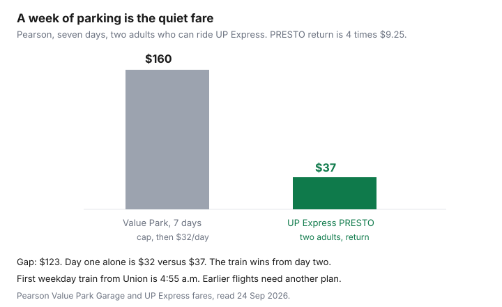

Travel · Canada
Getting to Canadian Airports Cheaply: Parking, Transit, and Rideshare Math
A week of airport parking is a second fare that never shows up on the flight receipt. At Toronto Pearson’s Value Park Garage, the published drive-up rate read 24 Sep 2026 is $32 a day, with a $160 maximum for the first seven days and $32 again after that. Two adults on UP Express with PRESTO, Pearson to Union and back, are $37. The week-long gap is about $123 before anyone calls the flight cheap. This page is that comparison for the big Canadian airports, plus the mornings when transit is the wrong saving.
Disclosure: Airport-parking comparison sites are an offer type. Saving Optimizer does not claim a partnership with a parking broker, an airline, or a rideshare company. Rates below were read 24 Sep 2026 from the airport, transit, and UP Express pages named in the sources. A rideshare price is a quote at the hour you leave, not a tariff. Education only.
Key takeaways
- Pearson Value Park Garage, without a reservation: $32 a day, $160 for the first seven days, then $32 a day. Height limit 2.2 metres. A reservation cancelled inside 24 hours has a published fee ($32 for this garage, $30 for the Value Park Lot, $42 for Daily Park).
- UP Express, Pearson–Union: adult $12.35 one way, PRESTO adult $9.25. Children 12 and under are free. Two adults, PRESTO, return: $37. Weekday first train from Union toward Pearson is 4:55 a.m.
- Canada Line from YVR: TransLink’s YVR AddFare is $6.50 as of 1 Jul 2026 on trips that start at the airport stations, on top of the zone fare. There is no AddFare on the way to the airport. Adult Compass stored value is $4.20 for two zones on this site’s 1 Jul 2026 fare note. One adult return is about $14.90 if downtown is a two-zone trip.
- Calgary Transit 2026 adult cash fare is $4.00, valid 90 minutes. Children 12 and under are free. Routes 100 and 300 serve YYC. There is no LRT to the terminal. Two adults, return, is $16 if each ride is a new fare.
- For two PRESTO adults, Pearson parking at $32 beats transit on a single day by $5, and loses on day two. A weekly cap does not make a seven-day stay cheaper than the train.
- A $20 transit saving that misses the flight costs the fare. Winter, a first bus that does not exist, and a Basic ticket you cannot change are reasons to buy the buffer. Security timing is the CATSA guide.
Compare on-airport vs off-airport parking for trip length
On-airport parking is the stall you can walk or train to without a shuttle company’s clock. Off-airport parking is a private lot plus a shuttle, often cheaper on a long trip and often worse at 11 p.m. when the shuttle is every 30 minutes and you still have to clear security. Compare three numbers: the all-in rate for your dates, the shuttle ride at both ends, and the cancellation fee if the flight moves.
Pearson’s own Value Park Garage page, read 24 Sep 2026, is the on-airport anchor for a long stay. Drive-up: $32 a day. The weekly maximum is $160 for the first seven days only. Day eight is another $32, so eight days is $192, not a second capped week. The rooftop is uncovered. Vehicles taller than 2.2 metres need a different lot. The terminal link train from Viscount is the connection, and Pearson describes it as about 6 to 12 minutes, every few minutes. That train is not UP Express. It only joins the garage to the terminals.
Reservations are how you lock a stall and sometimes a lower rate. Pearson’s parking page says changes are allowed until 24 hours before arrival, at the price then in effect, and that a booking already started cannot be extended online. Cancellations inside 24 hours have published fees, including $42 for Daily Park, $32 for Value Park Garage, $30 for the Value Park Lot, $32 for Viscount Station Reserved, $45 for Park and Ride, $46 for Preferred, $53 for Fast Track, and $76 for Valet Care. The same page describes a one-hour grace period around the reservation. Outside that hour you pay for the extra time. Read the rule for cancellations made more than 24 hours ahead on that page before you assume they are free. The text in front of the fee list is the contract.
Off-airport lots are a quote, not a rate card this page can stamp. Use a comparison site if you want several lots on one screen. Then read the shuttle hours against your landing time, the walk with a bag, and whether the lot is staffed. A lot that is $40 cheaper and closes its shuttle before you land is not cheaper. Add the shuttle time to the security buffer. Do not add it to your optimism.
UP Express, Canada Line, and city transit options that beat taxis
Transit beats a taxi when it runs at the hour you travel, you can handle the bags, and the fare for your party is under the ride you would otherwise book. Three systems cover the pattern. Your city still needs its own first-and-last trip check.
| Airport | Transit product | Return, two adults |
|---|---|---|
| YYZ Pearson | UP Express to Union. PRESTO adult $9.25 one way. Standard adult $12.35. Children 12 and under free. Senior standard $6.20 one way. | $37 on PRESTO. $49.40 at the standard adult fare. |
| YVR | Canada Line. AddFare $6.50 from 1 Jul 2026 only when the trip starts at YVR–Airport, Sea Island Centre, or Templeton. No AddFare toward the airport. Two-zone stored value $4.20 each way in the Compass note. | About $29.80. Each adult pays $4.20 + $6.50 leaving, and $4.20 returning. |
| YYC Calgary | Routes 100 and 300. Adult cash $4.00, 90 minutes. Children 12 and under free. No LRT to the terminal. Tickets from the machines at the stops. | $16 if each direction is outside the 90-minute window, which a flight is. |
UP Express also sells a family fare and a group pass on its fare table. Use those if the party matches the rule, instead of buying four adult tickets out of habit. Trains run about every 15 minutes. Weekday service from Union toward Pearson starts at 4:55 a.m.; the first weekday train from Pearson toward Union is 5:27 a.m. Weekend first trains are later (6:00 a.m. from Union, 6:27 a.m. from Pearson). A 6 a.m. departure is not an UP Express plan if you still need to clear security. Pearson’s separate “park and ride the UP” offer, $45 for a family on weekdays after 5 p.m. and on weekends, is a downtown day trip with a seven-hour return limit. It is not a substitute for a week of parking.
At YVR, TransLink’s page says the AddFare rose from $5 to $6.50 on 1 Jul 2026. It is charged on single-use tickets, DayPasses bought at those stations, Compass stored value, and tap-to-pay. Monthly passes and several other products are exempt. TransLink collects it. The airport’s own passenger page has lagged behind that increase in the past and still described a $5 add-on. Use the TransLink figure for any trip after 1 Jul 2026, and tap out so a two-zone trip is not charged as something worse. The return to the airport does not add a second $6.50.
At YYC, Calgary Transit’s 2026 adult cash fare is $4.00 and the monthly pass is $126. A monthly pass is a commute product. A vacation uses single rides unless you already hold the pass. There is no train into the terminal. Route 300 is the limited-stop bus toward downtown. Route 100 connects toward the Blue Line at Saddletowne. Check the first trip. An early departure that misses the first bus is a rideshare or a car, not a $4 story.
Rideshare surge timing for early departures
Rideshare apps do not publish a Canadian airport tariff you can put in a spreadsheet for next March. They publish a quote for the next few minutes. The quote at 2 p.m. on a Tuesday is not the quote at 4:30 a.m. on a Friday, and it is not the quote when everyone in the terminal lands at once.
The method: open the app at the hour you would leave, on a weekday that looks like your travel day, for both the departure and a typical return. Screenshot it. Add a tip if you tip, and add the walk from the pickup point the airport assigns, which is not always the door you hoped. If that round trip is under the parking total for your length of stay, and a car will actually be available at that hour, rideshare wins on dollars. If the quote is a surge you would not pay, the comparison is transit or the stall, not the happy-hour price.
A return ride is the one people forget. You can control the departure quote the night before. You cannot control the arrival quote if the flight is late and the curb is full. If that risk bothers you, the capped parking stay is the product that does not reprice at the curb. Off-airport shuttles have the same late-night question. Ask what time the last shuttle runs before you take the cheaper lot.
Two-car households: drop-off vs parking break-even days
A drop-off feels free because no stall ticket prints. It is two trips for the driver: out with the traveller, and back to the airport on the return, or one trip each way if someone else does the pickup. Fuel for those trips is real and usually small next to a week of parking. Time is the cost. If the driver would have used those hours on something you would otherwise pay for, write it down. If the driver is available and willing, the drop-off can beat $160 of parking without beating a $37 train fare. The train is still the cheap line when it runs.
Break-even against Value Park’s $32 day, for a party that can use UP Express:
- One adult, PRESTO return $18.50. Parking at $32 is already higher on day one.
- Two adults, PRESTO return $37. Day one of parking is $5 cheaper than the train. Day two of parking is $64 against a train fare that does not grow. Transit wins from the second day.
- The seven-day cap is $160. Two adults on the train remain $37. The cap saves you versus 7 × $32 = $224, and it does not catch the train.
Children 12 and under do not change the PRESTO adult math if the adults are the ones paying. A party of two adults and two young children is still $37 on PRESTO, not $74. That makes parking lose even earlier. A party that cannot manage bags and children on the train should stop running the dollar line and price the rideshare or the drop-off instead. Mobility is a constraint, not a failure of thrift.

Winter reliability and buffer time worth more than $20 saved
A storm, a stalled train, or a bus that is not running at 5 a.m. turns a $20 saving into a new ticket. CATSA’s buffer is about two hours domestic and three hours for US and international flights, and that clock starts when you are at the airport, not when you leave the house. Winter adds the ride. Leave a margin you would be willing to spend $20 to protect.
If the fare cannot be changed, the margin is worth more. Air Canada’s Basic brand is the example on Basic versus Standard. A same-day replacement fare is the real price of a tight connection to the airport. Airline refunds and compensation, when the airline causes the delay, are a different guide. They do not cover a bus you missed.
Practical winter rules: check the first transit trip the night before; if it does not clear security with the buffer, book the stall or a drop-off. Prefer the covered garage when freezing rain is the forecast and the cheaper lot is a walk. Do not switch plans at the curb. The reservation grace period is one hour, not a snow day.
Template: cost per day parked vs round-trip transit for two
One row per airport you actually use. Transit is a round trip, so it does not fall as the trip gets longer. Parking does, until a weekly cap flattens it.
| Length | YYZ park | YYZ transit, 2 adults | YVR transit, 2 adults | YYC transit, 2 adults |
|---|---|---|---|---|
| 1 day | $32 | $37 | About $29.80 | $16 |
| 3 days | $96 | $37 | About $29.80 | $16 |
| 7 days | $160 cap | $37 | About $29.80 | $16 |
| 8 days | $192 | $37 | About $29.80 | $16 |
Fill a rideshare column with your screenshots and a drop-off column with the driver’s real constraint. The winner is the lowest figure that still gets you to security inside the buffer, with bags you can carry and a return that exists when the flight lands. For a week at Pearson, two adults who can ride the train should not pay $160 to avoid a $37 fare. They should pay it if the flight leaves before the train, the party cannot use the train, or the winter margin is the thing they are buying. That is the whole decision.
Sources & date stamps
- Toronto Pearson, Value Park Garage — $32 daily, $160 weekly maximum for the first seven days, then $32, height 2.2 m. Parking page — cancellation fees inside 24 hours and the one-hour grace period. Read 24 Sep 2026.
- UP Express fare table and Pearson UP Express page — adult $12.35, PRESTO $9.25, children 12 and under free, first-train times. Read 24 Sep 2026.
- TransLink, Transferring and AddFare — YVR AddFare $6.50 from 1 Jul 2026, not charged toward the airport. Adult two-zone Compass stored value $4.20 as dated on this site’s Compass guide for 1 Jul 2026.
- YYC public transit page — routes 100 and 300, no LRT to the terminal. Calgary Transit 2026 adult cash fare $4.00, 90 minutes, children 12 and under free. Read 24 Sep 2026.
Frequently asked questions
How much is a week of parking at Pearson?
Value Park Garage, without a reservation, was $32 a day on the page read 24 Sep 2026, with a $160 maximum for the first seven days only. Day eight adds another $32, so eight days is $192. The height limit is 2.2 metres. A cancellation inside 24 hours costs $32 for that garage.
When does UP Express beat parking?
Two adults with PRESTO pay $9.25 each way, $37 return, and children 12 and under ride free. Against a $32 daily rate, parking is $5 cheaper on day one and more expensive from day two. A seven-day cap of $160 does not catch a $37 train fare. The first weekday train from Union is 4:55 a.m., which is too late for many early departures.
What does the Canada Line cost from YVR?
From 1 July 2026 TransLink adds $6.50 when the trip starts at the airport stations. The trip to the airport does not add it. Using the $4.20 adult two-zone stored-value fare, one adult’s return is about $14.90 and two adults are about $29.80. Monthly passes are exempt from the AddFare. The airport’s own page has shown the older $5 figure; use TransLink.
Is a drop-off cheaper than parking?
The stall fee is zero and the driver makes two airport trips. For a week at Pearson that can beat $160 of parking and still lose to a $37 train if the train runs when you fly. Price rideshare at the hour you would leave, not in the middle of the day. A $20 saving that misses the flight costs the ticket.